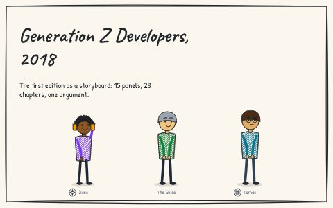
The 2018 book, as a storyboard
Book v1.0.0, the 28 published chapters, converted into 15 panels: what the first edition said, who it said it to, and where it stops.
23 storyboards · 254 panels · 2 series · 14 characters · all drawn from data
A storyboard is a short strip of panels: who is there, what they say, the evidence, the punchline. Here each one is a JSON file, and the panels are drawn by code in your browser, so a panel is corrected by changing a line. Read them, take them in seven shapes, or put one on your own page with two lines.
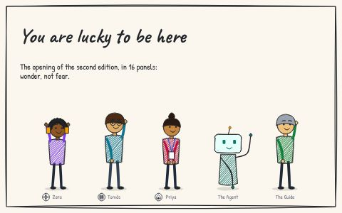
/v0/v0.1/v0.1.0/, never changed once published, with a hash for every file. Why.The second edition of Generation Z Developers, storyboarded before it was written: the punchline, the idea, the evidence and the people each chapter is for. Where the storyboards started, on 18 October 2026.
Where it started
The 2018 book, and the first proposal for the second edition.

Book v1.0.0, the 28 published chapters, converted into 15 panels: what the first edition said, who it said it to, and where it stops.
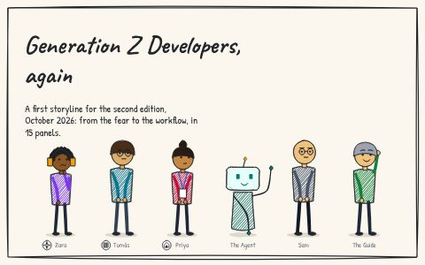
A proposal in 15 panels: the order the second edition could tell its argument in, built from the topics the newsroom's articles already cover. For Dinis to tear apart. Superseded: the second release candidate follows the Gen ZX frame (decision 015, storyboard 12).
The second edition, part by part
One storyboard per co-written article, the Guide speaking Dinis's words.
The first pages of the second edition as Dinis described them, in 16 panels: wonder, not fear; the history; technology that finally works for you; learning made for you; and why that makes you a developer.
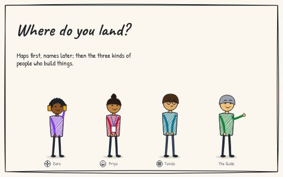
Wardley maps, shown before they are named, and the three centres of gravity: explorer, villager, town planner. 14 panels.
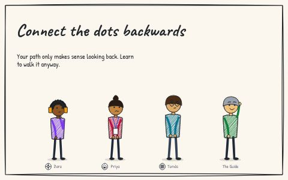
Paths, mixing disciplines, learning as a lifelong skill, and why to read this on paper. 14 panels.
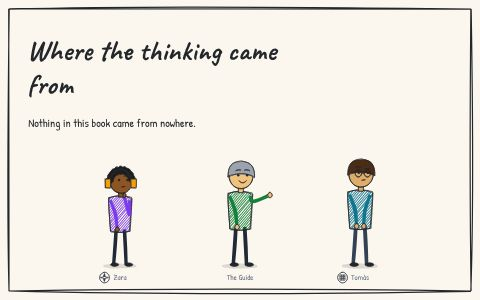
The influences behind the book, as claims you can check, and where each one lands. 10 panels.
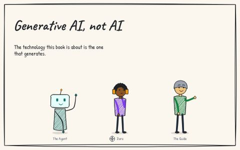
What the book means by generative AI, how a language model works in plain words, where hallucinations come from, and where Dinis was corrected. 12 panels.
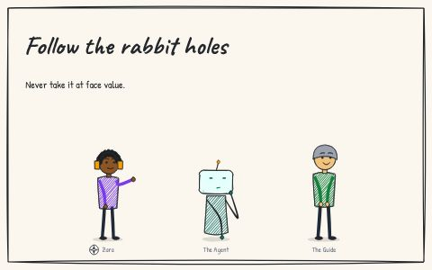
Provenance, explainability and asking for the evidence; and being the best-prepared person in the room. 10 panels.
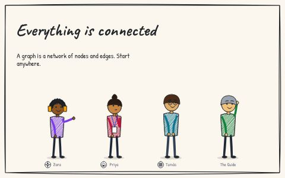
What a graph is (not a diagram), the whodunit, a graph becoming a map, groups of groups, provenance, and starting anywhere. 12 panels.
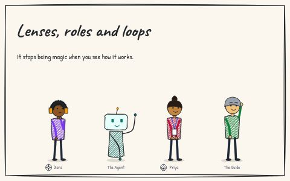
How LLMs and agents work: a prompt as a lens, a role as a model with a description, an agent as a loop, tools as requests, no memory, compression, and focused threads. 13 panels.
How it is made, and what comes next
The book in release mode, and the startup edition that became the frame of the second release candidate.
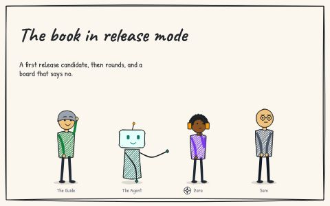
A first release candidate from the first list, the rounds, the adversarial review board, and precedents. 14 panels.
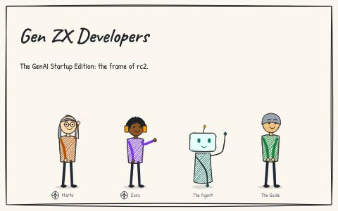
The GenAI Startup Edition, for Generation Z and Generation X, with one objective, a company by the end of the book: proposed on 19 October 2026 and adopted by Dinis as the frame of the second release candidate (decisions 014 and 015). 14 panels.
Strips from the review
Short comic strips told from Dinis's review of the printed candidate: experiments in pacing, timing and flow, one beat per panel.
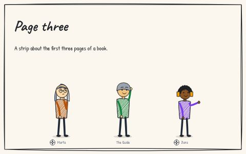
Marta reads the first three pages of release candidate 2, puts the book down, and reads them again as the pen would have them. 10 panels.
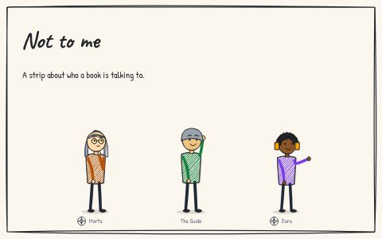
Marta reads the front of release candidate 2 on her phone, and the book keeps talking to its author. 8 panels.
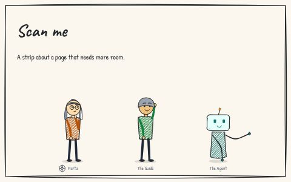
Marta meets a word she does not know on page 12, and a code in the margin. 6 panels.
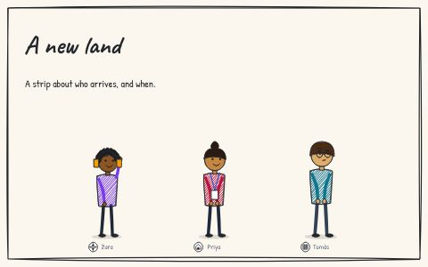
Note 142 drawn: explorers, then villagers, then town planners, as the population grows. 6 panels.
pki.sgit.ai's storyboards: how a person gets a key pair from a passkey, how two people verify each other two ways, how a secret travels by QR code and how an agent gets a key of its own. Each board links to the page where you can try it for real.
Keys for people
A passkey opens a vault, the vault holds the keys, and two people find and verify each other.
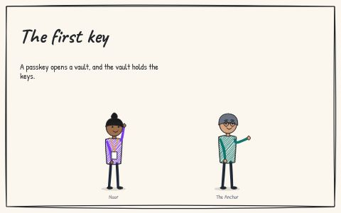
Noor opens a vault with a passkey, makes a key pair in her browser, and finds it on her laptop too. 9 panels.
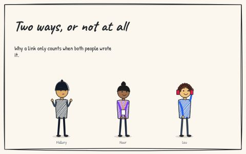
Mallory floods a key, as in 2019, and then tries again here, where a vouch can only be written in the voucher's own record. 9 panels.
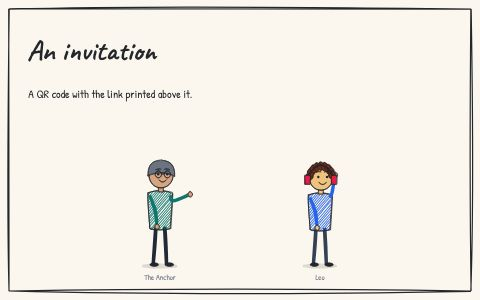
The Anchor invites Leo with a QR code; Leo has no access key, keeps his key in the browser, and is verified, until a date. 9 panels.
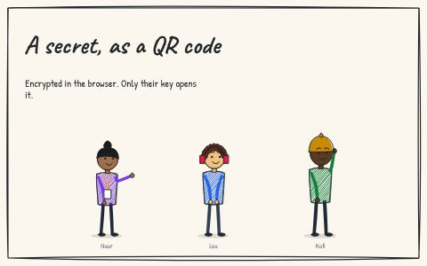
Noor seals a token to Leo's key; Mallory gets the link and nothing else; Kofi writes to Noor's inbox without an account. 9 panels.
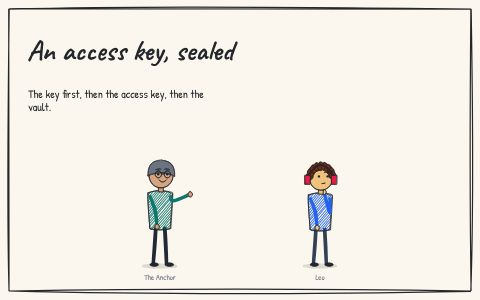
Leo needs an access key to make a vault; the Anchor seals one to the key Leo already has, and keeps a ledger of hashes. 9 panels.
Keys for agents
An agent makes its own key, names its operator and is confirmed for a week.
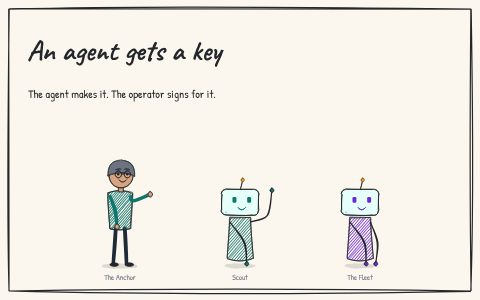
Scout, a session agent, makes its own key; the Anchor compares the fingerprint and signs for it, for a week; the Fleet runs the rest. 10 panels.
Next: proposed
Boards for what is proposed and not built yet.
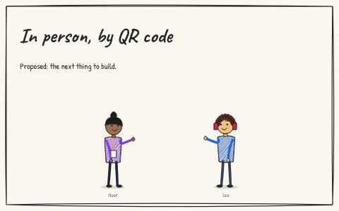
Noor and Leo scan each other's phones; the camera is the channel; two scans make one link. Proposed, not built. 9 panels.
The storyboards started in a book, moved to gen-z-developers.sgit.ai and then to pki.sgit.ai. Today they move into a site of their own, with the code that draws them on a second site, so any page can use it.
The brief listed the shapes a storyboard should come in: JSON, markup, a semantic graph, JPEG, SVG, animated and a thumbnail. Here is each one, where it comes from, and why only two of them are committed images.
The kit that draws every storyboard is published at a path that names its version, /v0/v0.1/v0.1.0/, and nothing at that path ever changes. Why, how it is enforced, and what it costs.